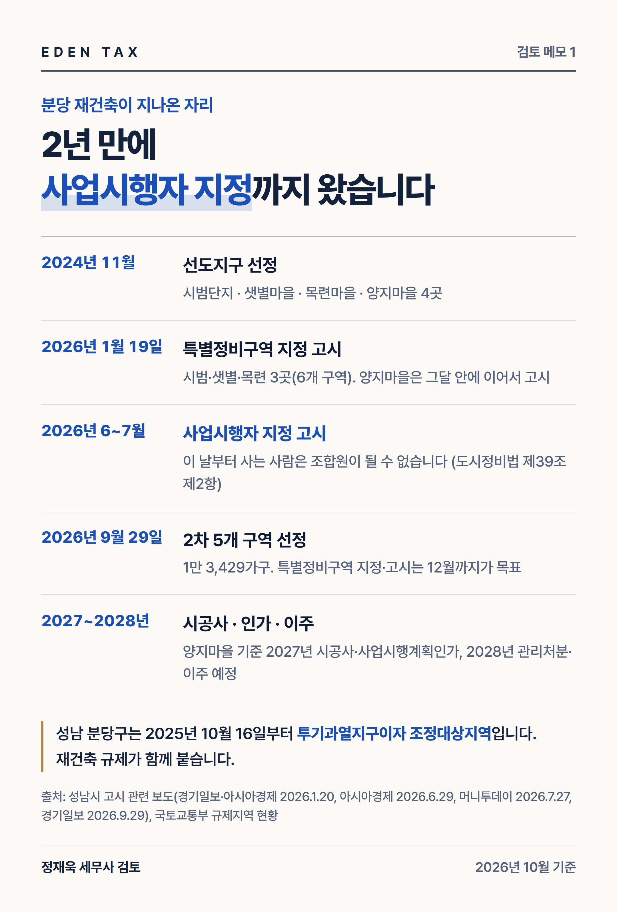
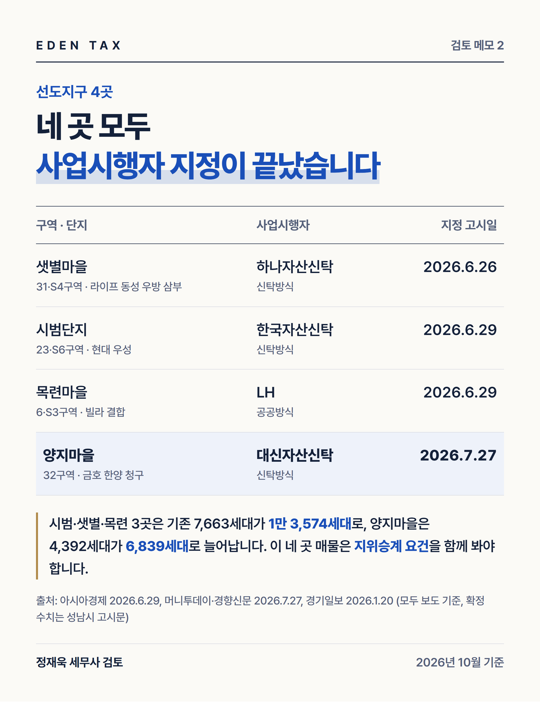
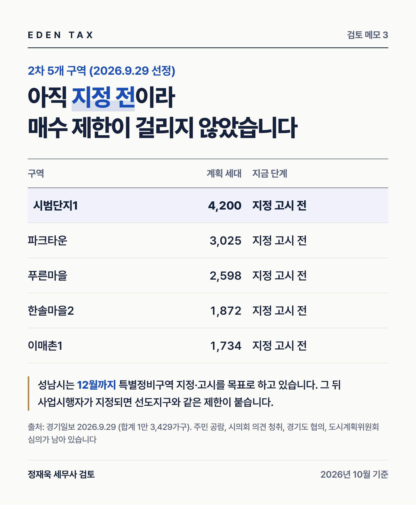

분당 재건축은 2024년 11월 선도지구 선정으로 시작해 2026년 7월에 네 곳 모두 사업시행자 지정을 마쳤습니다. 2026년 9월에는 2차 다섯 곳이 추가로 뽑혔습니다. 같은 '분당 아파트'라도 구역마다 단계가 다르고, 단계가 다르면 매물을 볼 때 확인할 것도 달라집니다. 아홉 개 구역을 한 표에 놓고 보겠습니다. (2026년 10월 28일 기준, 세대수와 일정은 성남시 고시 관련 보도 기준)
아홉 개 구역, 지금 어디에 있나
| 구역 | 단지 | 계획 세대 | 지금 단계 | 매물 확인 |
|---|---|---|---|---|
| 샛별마을(31·S4) | 라이프·동성·우방·삼부 + 빌라 | — | 사업시행자 지정(2026.6.26) | 지위승계 요건 확인 |
| 시범단지(23·S6) | 현대·우성 + 빌라 | — | 사업시행자 지정(2026.6.29) | 지위승계 요건 확인 |
| 목련마을(6·S3) | 빌라 결합 | 2,475 | 사업시행자 지정(2026.6.29) | 지위승계 요건 확인 |
| 양지마을(32) | 금호1·3, 한양1·2, 청구2 | 6,839 | 사업시행자 지정(2026.7.27) | 지위승계 요건 확인 |
| 시범단지1 | — | 4,200 | 2차 선정, 지정 고시 전 | 요건 없음 |
| 파크타운 | — | 3,025 | 2차 선정, 지정 고시 전 | 요건 없음 |
| 푸른마을 | — | 2,598 | 2차 선정, 지정 고시 전 | 요건 없음 |
| 한솔마을2 | — | 1,872 | 2차 선정, 지정 고시 전 | 요건 없음 |
| 이매촌1 | — | 1,734 | 2차 선정, 지정 고시 전 | 요건 없음 |
선도지구 가운데 시범·샛별·목련 세 곳은 기존 7,663세대가 1만 3,574세대로 늘어납니다. 구역별로 쪼갠 세대수는 보도마다 달라 비워 두었습니다. 2차 다섯 곳은 합쳐서 1만 3,429가구이고, 성남시는 12월까지 특별정비구역 지정·고시를 목표로 하고 있습니다.
표의 '매물 확인' 칸이 이 글에서 짚으려는 부분입니다.
선도지구 네 곳은 왜 요건을 따로 보는가

분당구는 2025년 10월 16일부터 투기과열지구입니다. 투기과열지구에서 재건축사업을 할 때 조합설립인가 후에 그 구역의 건축물이나 토지를 양수한 사람은 조합원이 될 수 없습니다(도시 및 주거환경정비법 제39조 제2항).
분당 선도지구는 조합을 만들지 않았습니다. 샛별마을·시범단지·양지마을은 신탁사가, 목련마을은 LH가 사업시행자입니다. 이런 경우에는 조합설립인가 대신 사업시행자 지정이 기준 시점이 됩니다(같은 조 제1항). 성남시도 사업시행자 지정을 고시하면서 "고시 이후 건축물이나 토지를 취득한 사람은 분양신청을 할 수 있는 조합원 자격을 가질 수 없다"고 안내했습니다.
다만 같은 항 단서에 예외가 있어, 양도인이 거기 해당하면 양수인이 조합원 지위를 그대로 이어받습니다. 현장에서 거래되는 선도지구 매물은 대부분 이 요건을 갖춘 것들입니다. 반대로 요건을 못 갖춘 매물을 사면 분양신청을 할 수 없고 현금청산 대상이 됩니다(같은 조 제3항).

예외는 파는 사람이 갖춰야 합니다
여기서 가장 많이 어긋나는 지점입니다. 예외 요건을 갖춰야 하는 쪽은 매수인이 아니라 양도인입니다. 법은 "양도인이 다음 각 호의 어느 하나에 해당하는 경우 그 양도인으로부터 양수한 자는 그러하지 아니하다"고 적고 있습니다.
계약 전에 확인할 것을 순서대로 적으면 이렇습니다.
- 상속·이혼으로 인한 양도인가. 이 둘은 애초에 제한 대상이 아닙니다.
- 1세대 1주택자인가. 양도하는 주택의 소유기간이 10년, 거주기간이 5년 이상이면 예외입니다(시행령 제37조 제1항). 거주기간은 주민등록표로 보고, 배우자나 직계존비속이 산 기간은 합산합니다.
- 세대원 전원이 다른 시·군으로 옮기는가. 근무·생업·질병치료·취학·결혼이 사유여야 합니다.
- 세대원 전원이 해외로 이주하거나 2년 이상 체류하는가.
- 투기과열지구 지정 전에 계약했는가. 지정일부터 60일 안에 부동산 거래신고를 마친 경우입니다(시행령 제37조 제3항 제6호). 분당은 2025년 10월 16일에 지정됐으니 지금 새로 사는 경우에는 해당하지 않습니다.
등기부에는 거주기간이 나오지 않습니다. 주민등록초본과 보유기간을 서류로 확인하고, 조합원 지위가 승계되지 않으면 계약을 해제할 수 있다는 내용을 특약에 넣어 두는 편이 안전합니다.
2차 다섯 곳은 아직 이 요건이 없습니다

2026년 10월 현재 2차 다섯 곳은 특별정비구역 지정 고시 전이라 이 요건이 붙지 않았습니다. 다만 주민 공람과 공고, 시의회 의견 청취, 경기도 협의, 도시계획위원회 심의가 남아 있고 성남시는 12월까지 고시를 목표로 하고 있습니다. 고시 뒤 사업시행자가 지정되면 선도지구와 같은 상태가 됩니다.
지금 사는 경우에도 분당구 아파트는 토지거래허가구역입니다(2025년 10월 20일부터 허가 의무). 계약 전에 허가를 받아야 하고 실거주 의무가 따릅니다. 전세를 끼고 사는 방식은 쓸 수 없습니다.
세금은 날짜로 갈립니다
취득세는 분당구가 조정대상지역이라 2주택이 되면 8%, 3주택 이상이면 12%가 원칙입니다(지방세법 제13조의2).
양도세에서는 기존 집과 새로 산 집이 모두 조정대상지역이면 일시적 2주택 처분기한이 2년입니다(소득세법 시행령 제155조 제1항 제1호). 2026년 10월 1일부터 적용되고 있어, 서울에서 분당으로 갈아타는 경우가 여기에 들어갑니다.
관리처분계획인가가 나면 보유하던 주택은 입주권으로 바뀝니다. 비과세 판단과 장기보유특별공제가 그 앞뒤로 달라집니다. 선도지구 네 곳은 2028년 상반기 관리처분이 예정돼 있으므로, 그 전에 팔 것인지 입주권으로 넘길 것인지를 미리 계산해 두셔야 합니다.
매물 설명서보다 매도인 서류를
분당은 구역마다 날짜가 다릅니다. 중개사무소에서 지위승계가 되는 매물을 추려 주더라도, 요건을 채워야 하는 쪽은 파는 분이고 확인은 서류로 남겨야 합니다. 선도지구 네 곳을 보고 계시다면 매도인의 보유기간과 거주기간을 주민등록초본으로 확인하시고, 2차 구역을 보고 계시다면 고시 일정과 토지거래허가 실거주 의무를 자금 계획에 넣어 두시기 바랍니다. 계약서를 쓰고 나서 바꾸기 어려운 부분입니다.
— 정재욱 세무사
에덴택스는 국세청 출신 세무사가 양도·상속·증여·취득까지 부동산 세금을 직접 봅니다. 보유 주택 현황, 매수 예정 단지의 구역 정보, 자금 계획을 가지고 오시면 취득세와 기존 집 처분 순서, 입주권 전환 시점까지 함께 검토해 드립니다.
※ 2026년 10월 28일 현재 도시 및 주거환경정비법·같은 법 시행령, 지방세법, 소득세법 시행령 원문과 국토교통부 10·15 주택시장 안정화 대책, 성남시 고시 관련 언론 보도를 기준으로 작성했습니다. 구역별 세대수와 일정은 보도 기준이며 확정 수치는 성남시 고시문으로 확인해야 합니다.
※ 본 글은 세무·부동산 분석을 위한 참고자료로, 개별 세무상담이나 신고 검토를 대체하지 않으며 투자·청약을 권유하지 않습니다. 세금 신고 및 투자 결정 전 전문가의 검토를 받으시기 바라며, 이를 활용한 판단과 결과의 책임은 이용자에게 있습니다.